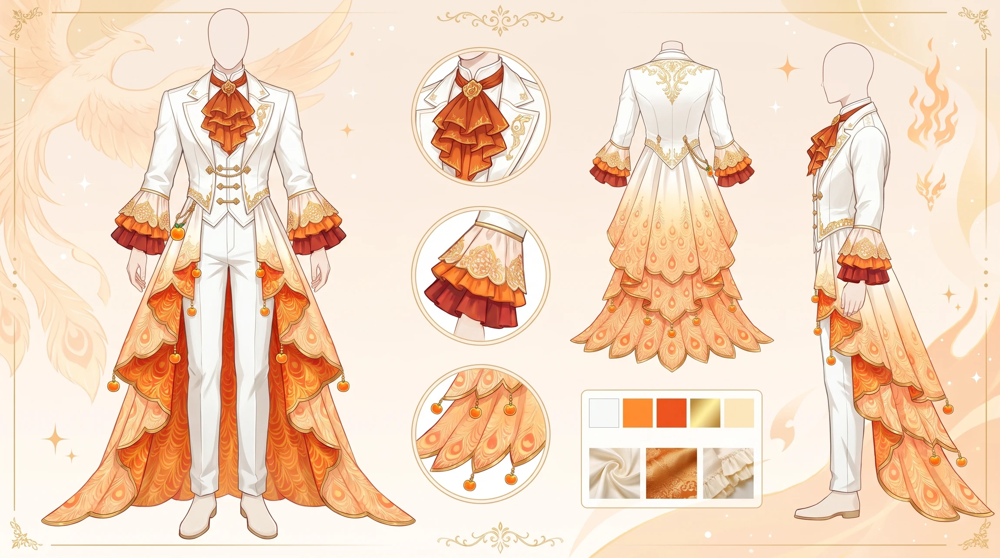
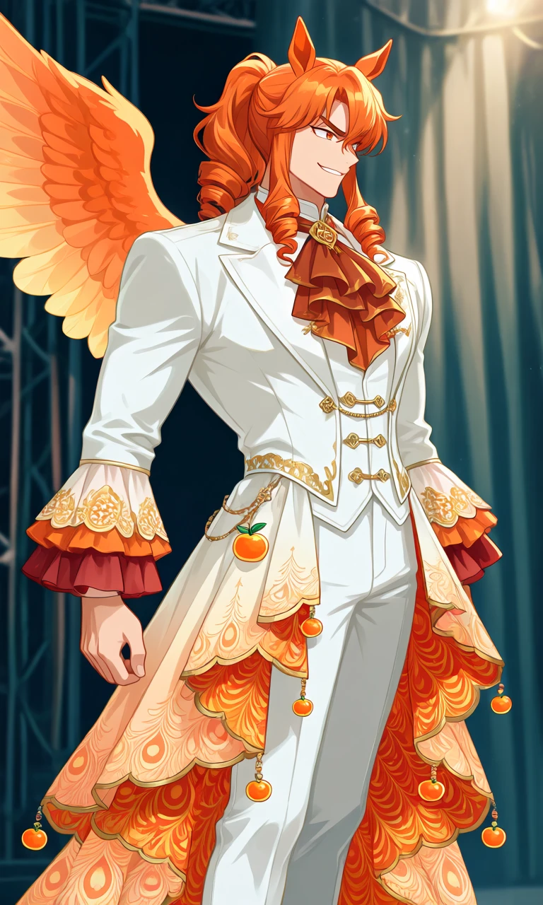
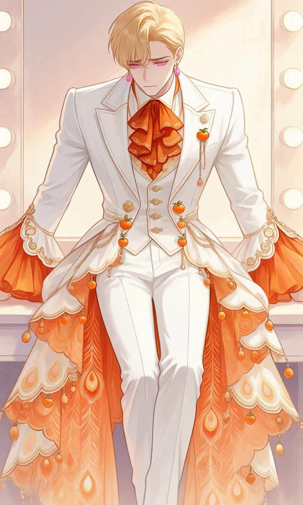

The Phoenix Ascot

Outfit Prompt
Upper Body / Jacket
Main garment: A white, tailored long coat/jacket with structured shoulders and long sleeves. The jacket is mostly open or worn loosely in the front, revealing the layers underneath.
Collar and neck: A prominent, layered dark orange-light orange cravat with ruffled edges and gold detailing. It sits high on the neck, paired with a thin white high collar underneath.
Front closure: A fitted white vest section with vertical gold-trimmed button closures (Chinese-style knot buttons) down the center.
Sleeves: Full-length white sleeves that flare dramatically at the cuffs into wide, layered ruffled cuffs in orange and blood orange with intricate circular/gold embroidery. The cuffs have a scalloped edge.
Decorative accents: Gold piping, small chains, and dangling pendants (including a orange (fruit)-shaped charm) adorn the waist and chest area.
Lower Body / Skirt-Coat Hybrid
The jacket transitions into a dramatic high-low asymmetrical hem:
Front: Relatively short and fitted, ending around mid-thigh or higher, paired with straight white trousers for a clean, masculine silhouette.
Back/Sides: Extremely long, flowing train-like panels that cascade down past the knees in multiple layered tiers. These panels feature a beautiful gradient from white/ivory at the top to deep orange and pastel orange at the bottom.
Patterning: The lower flowing sections display an ornate, repeating scale or peacock-feather motif in shimmering dark oranges, pastel oranges, and soft peach/orange tones. The edges are finished with delicate gold trim, scalloped borders, and dangling orange (fruit)-shaped tassels or beads that add movement and elegance.
Pants and Footwear
Pants: Slim, straight-cut white trousers that hug the legs, maintaining a formal and polished look.
Outfit Examples



